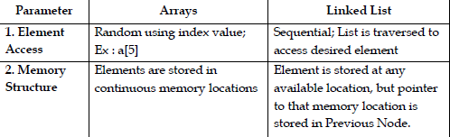
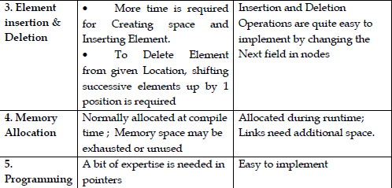
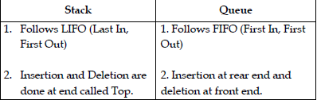
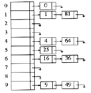

1. What is meant by ADT? Give examples. (Remember)
- An abstract data type is defined as a mathematical model of the data objects that make up a data type as well as the functions that operate on these objects. There are no standard conventions for defining them.
- Objects such as lists, sets, and graphs, along with their operations, can be viewed as abstract data types.
2. Write about List ADT. (Remember)
- A list is an abstract data type that represents an ordered sequence of values, where the same value may occur more than once.
3. State the limitations of arrays. (Understand)
- Number of elements to be stored in an array should be known in advance
- Chances of memory wastage or shortage
- The elements of array are stored in consecutive memory locations. So insertions and deletions are very difficult and time consuming.
15. Compare linked list and arrays. (Analyse)


4. What is meant by stack? Give examples. (Remember)
Stack is an ordered group of homogeneous items of elements. Elements are added to and removed from one end called the top of the stack. Most recently added item will be at the top of the stack and hence it will be removed first. So stack is said to follow the queue discipline LIFO: Last In, First Out. The well known operations in a stack are PUSH and POP.
- Ex : A stack of cafeteria trays, Stack of neatly folded shirts, stack of pennies
5. List down the applications of stack. (Remember)
- Postfix Expression Evaluation
- Expression Conversion
- Infix to Postfix
- Infix to Prefix
- Postfix to Infix
- Prefix to Infix
- Balanced Parenthesis Checking in expressions
- Parsing
- Recursive Function Calling
- Function Calling
6. What is meant by queue? Give examples. (Remember)
A queue is an ordered set of homogeneous elements in which the elements are added at one end called the rear end and removed from another end called front end. So a queue is said to follow the discipline FIFI (First In, First Out). The common operations in a queue include enqueue and dequeue.
- Examples: people waiting in reservation counters.
7. List down the applications of queue. (Remember)
- Jobs waiting in a printer,
- Processes waiting in a CPU
- Messages waiting in a communication channel
8. Compare stack data structure with queue data structure. (Analyse)

9. State the advantages of using circular array for queue implementation. (Understand)
In linear array, once rear reaches end of array, no more elements can be added to array though some space exists in the front of array due to removal of some elements from front of array. In case of circular queue, once rear reaches end of array, it is rotated back to the beginning of array, so that empty spaces can be utilized effectively.
10. State the different ways that a stack/queue/list can be implemented.(Remember)
- Using arrays
- Using cursors
- Using Linked Lists
11. What is meant by node in linked list? (Remember)
struct node {
int data;
struct node *next;
};
In the above node structure, we have defined two fields in structure –Field Significance
data It is Intege Part for Storing data inside Linked List Node
next It is a pointer field which stores the address of another node
12.What is meant by deque? List down its operations? (Remember)
A double-ended queue (deque, pronounced as deck) is an abstract data type that generalizes a queue, for which elements can be added to or removed from either the front or rear ends.
- Operations :
- Push(X,D)-Insert item X on the front of the deque D
- Pop (D)-Remove the front item from deque D
- Inject(X,D)-Insert item X on the rear end of the deque D
- Eject(D)-Remove the rear item from the deque D
13. Write the advantage of array implementation of list. (Understand)
- Easy to implement
- Random access is easier
- Suitable when the numbers of elements are predefined or already known.
14. Write the need for header/Sentinel node in a linked list. (Understand)
- A header node is a special node in a linked list which always points to the first node in the list.
- When the first node in list has to be deleted, it can be easily done by making the header node to point to the second node.
- Since data portion of header is unused, it can be used for keeping number of elements in the list, maximum / minimum value in list or any other value relevant to the application.
15. Write the advantages of circular linked list compared to linear linked list. (Understand)
- No longer need to have both a head and tail nodes to keep track of the list.
- Even if only a single variable is used, both the first and the last list elements canbe found in constant time.
- Also, for implementing queues using circular linked list, we will only need one pointer namely tail, to locate both head and tail.
16. Write down the applications of Circular Linked List. (Remember)
- To keep track of which player’s turn it is in a multi-player board game
- It is the basic idea of round robin scheduling algorithm.
- Used for time sharing in operating system and resource sharing in CPU scheduling.
17. Write down the applications of Doubly Linked List. (Remember)
- A great way to represent a deck of cards in a game.
- browser cache which allows you to hit the BACK button (a linked list of URLs)
- Applications that have a Most Recently Used (MRU) list (Ex ; a list of file names)
- stack, hash table, and binary tree can be implemented using a doubly linked list.
- Undo functionality in Photoshop or Word (a linked list of state)
18.What is meant by Hashing? (Remember)
- Hashing is the transformation of string of characters into a usually shorter fixed length value or key that represents the original string.
- It is used to index and retrieve items in a database because it is faster to find the item using the short hashed key than to find it using the original value.
19. What is meant by hash table? (Remember)
- The hash table data structure is merely an array of some fixed size, containing the keys. A key is astring with an associated value.
- Each key is mapped into some number in the range 0 to tablesize-1and placed in the appropriate cell.
- Hash tables, are used to implement associative arrays and dynamic sets.
20. What is meant by hash function? (Remember)
- A hash function is a key to address transformation which acts upon a given key to compute the relative position of the key in an array.
- The choice of hash function should be simple and it must distribute thedata evenly.
- A simple hash function is hash_key=key mod tablesize.
21. State the importance of hashing. (Remember)
- Hashing maps key with the corresponding value using hash function.
- Hash tables support the efficient addition of new entries.
- Time spent on searching for the required data is independent of the number of items stored in hash tables.
22. What is meant by collision in hashing? (Remember)
- Two or more keys hashing to the same slot in hash table is called collision.
- That is when an element is inserted, if its hash value matches a location in hash table where an element is already present, it is said to be collision.
23. Write the collision resolution methods? (Remember)
- Separate chaining or External(Open) hashing
- Open addressing or Closed hashing
- Linear probing
- Quadratic probing
- Double hashing
24. What is meant by separate chaining? (Remember)
- Separate chaining is a collision resolution technique to keep the list of all elements that hash to thesame value.
- This is called separate chaining because each hash table element is a separate chain(linked list).
- Each linked list contains set of elements whose keys hash to the same index.
- Following is the sample hash table with separate chains for the hash function hash(x) = x mod 10.

25.Write the advantage and disadvantages of separate chaining. (Understand)
- Advantages
- Every element will get space.
- Disadvantages
- Need two data structures for implementation-table for index/key values and list for actual values
- More memory is consumed by pointers
- Search / find takes more time since entire list matching with search key should be traversed
- As chains get longer, search time increases to O(n) in the worst case.
- Parts of the array might never be used.
26. What is meant by open addressing? (Remember)
Open addressing is a collision resolving strategy in which, if collision occurs alternative cells are trieduntil an empty cell is found. The cells h0(x), h1(x), h2(x),... are tried in succession, wherehi(x)=(Hash(x)+F(i))mod Tablesize. Here, F is the collision resolution function.
27. What do you mean by Probing? (Remember)
Whenever collision occurs in hashing, the process of getting next available hash table array cell to insert the new value is called as probing.
28. What is meant by linear probing?(Remember)
- Linear probing is an open addressing collision resolution strategy in which whenever collision occurs, the array (hast table) is scanned down one cell at a time looking for an empty cell with the hash function hi(X) = (Hash(X) + i) mod TableSize (i = 0, 1, 2,...).
- If the table is big enough, a freecell can always be found, but the time to do so can get quite large.
29. Write about primary clustering?(Remember)
In linear probing collision resolution strategy, even if the table is relatively empty, blocks of occupiedcells start forming groups. This effect is known as primary clustering means that any key hashes into thecluster will require several attempts to resolve the collision and then it will add at the end of the same cluster.
30. What do you mean by quadratic probing? (Remember)
- Quadratic probing is an open addressing collision resolution strategy in which hi(X) = (Hash(X) + F(i)) where F(i)=i2.
- But here also, there is noguarantee of finding an empty cell once the table gets half full.This problem can be overcome by fixing tablesize as a prime.
31. What do you mean by double hashing?(Remember)
- Double hashing is an open addressing collision resolution strategy in which the search is spread out for an empty slot by using a second hash function.
- hi(X) = (Hash1(X) + Hash2(X)) mod TableSize for i = 0, 1, 2,...
- Thisformula says that we apply a second hash function to X and probe at a distance Hash2(X).
- Good choice of Hash2(X) can guarantee "does not get stuck".
- For Integer keys:Hash2(X) = R-(X mod R) is preferred where R is a prime smaller than TableSize
32. State advantages and disadvantages of linear probing. (understand)
- Advantages:
- Insertion never fails if the table has at least one free field.
- Disadvantages
- Compared to quadratic probing and double hashing, access becomes inefficient at a lower load factor. The reason for this is that resolution sequences for different table fields merge if they have a field in common.
33. State advantages and disadvantages of quadratic probing. (understand)
- Advantages:
- Compared to linear probing access becomes inefficient at a higher
load factor.
- Disadvantages
- Insertion sometimes fails although the table still has free fields.
34. State advantages and disadvantages of double hashing. (understand)
- Advantages :
- Compared to linear probing access becomes efficient at a higher load factor.
- Resolution sequences for different elements are different even if the first hash function hashes the elements to the same field.
- If the hash functions are chosen appropriately, insertion never fails if the table has at least one free field.
- Disadvantages
- May not work well when table size is small.
35. State advantages and disadvantages of open hashing. (understand)
- Advantages :
- Real deletion possible.
- Insertion never fails.
- Access operations are quite efficient even if the table has a high load factor (possibly greater than 1). As a consequence the table size for an open hash table can be chosen smaller than the table size for a closed hash table.
- Disadvantages
- Memory allocation causes time overhead in the insertion operation.
- Extra space required to store "Next"-pointers.
36. State advantages and disadvantages of closed hashing. (understand)
- Advantages :
- No time overhead caused by dynamic memory allocation.
- No extra space required to store "Next"-pointers.
- Disadvantages
- Real deletion not possible.
- The number of table elements is bounded by the table size.
- Access operations are inefficient if the table has a high load factor.
- The table size has to be chosen greater than the expected number of
- elements to make access efficient.